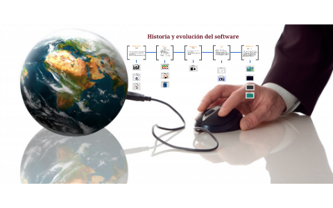
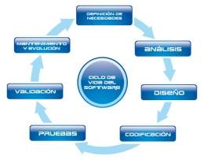

clases
Fundamentos a la Ingeniería de Software
Más que una disciplina o una parte del conocimiento, la Ingeniería es un verbo, una palabra de acción, un modo de enfocar el problema. La Ingeniería del Software es el establecimiento y uso de principios robustos de la ingeniería a fin de obtener económicamente software que sea fiable y que funcione eficientemente sobre maquinas reales.
Origen del Software
Ingeniería del Software, es el término utilizado por Fritz Bauer en la primera conferencia sobre desarrollo de software patrocinada por el Comité de Ciencia de la OTAN celebrada en Garmisch (Alemania), en octubre de 1968, previamente había sido utilizado por el holandés Edsger Dijkstra en su obra The Humble Programmer. Puede definirse según Alan Davis como "la aplicación inteligente de principios probados, técnicas, lenguajes y herramientas para la creación y mantenimiento, dentro de un coste razonable, de software que satisfaga las necesidades de los usuarios". Su origen se debió a que el entorno de desarrollo de sistemas software adolecía de:
• Retrasos considerables en la planificación
• Poca productividad
• Elevadas cargas de mantenimiento
• Demandas cada vez más desfasadas frente a las ofertas
• Baja calidad y fiabilidad del producto
• Dependencia de los realizadores
Evolucion del Software
El término “evolución” del software se utiliza desde los sesenta para denominar la dinámica de crecimiento del software. Una definición atribuida a Lehman y Ramil dice que la evolución del software es “todas las actividades de programación que se orientan a generar una nueva versión de un software a partir de una versión anterior operativa. Ned Chapin 1(1999) lo definió como “la aplicación de las actividades y procesos de mantenimiento del software que generan una nueva versión operative de un software con una funcionalidad de usuario o propiedades cambiadas a partir de una versión anterior […] junto con los procesos y actividades de garantía de calidad y con la gestión de esos procesos”. De estas definiciones se desprende que la evolución cubre el ajuste a funcionalidades adicionales. La guía SWEBOK2 considera que la causa del mantenimiento está tanto en la necesidad de “cambios” como de “evolución” en el software. 
Problemas en el desarrollo de software
Haciendo uso de la definición de proyecto de la guía del PMBOK, y adaptándola a un proyecto software, podríamos definirlo como: “Un proyecto software es un esfuerzo temporal que se lleva a cabo para crear un producto software, servicio TI o resultado único.”
que es un software
Según la definición del IEEE, "software es la suma total de los programas de ordenador, procedimientos, reglas, la documentación asociada y los datos que pertenecen a un sistema de cómputo", y "un producto de software es un producto diseñado para un usuario".
Software de aplicaciones
se usan para proveer servicios a clientes y ejecutar negocios de forma más eficiente. El software de aplicaciones puede ser un sistema pequeño o uno grande integrado. Como ejemplos de este tipo de software estarían un sistema de cuentas, un sistema de planificación de recursos
Software de sistemas
El software de sistemas se usa para operar y mantener un sistema informático. Permite a los usuarios usar los recursos del ordenador directamente y a través de otro software. Algunos ejemplos de este tipo de software son los sistemas operativos, compiladores y otras utilidades del sistema.
Tipos de sistemas de información
Los sistemas de información, de manera general se pueden clasificar de tres formas según sus propósitos generales, en este sentido Peralta (2008) clasifica los sistemas de información en tres tipos fundamentales: (1) Sistemas transaccionales; (2) Sistemas de Soporte a la Toma de Decisiones, Sistemas para la Toma de Decisión de Grupo, Sistemas Expertos de Soporte a la Toma de Decisiones y Sistema de Información para Ejecutivos y (3) Sistemas estratégicos.
Son Sistemas de Información que logran la automatización de procesos operativos dentro de una organización ya que su función primordial consiste en procesar transacciones tales como pagos, cobros, entradas, salidas, etc
Son sistemas de información desarrollado en las organizaciones con el fin de lograr ventajas competitivas, a través del uso de la tecnología de información. En dependencia del enfoque (tres en total), según reporta Peña (2006), los sistemas de información se pueden agrupar en una cierta clasificación, que brinda una idea esencial de su estructura y funcionamiento.
cuando el hombre auxiliado por cierto equipo (máquinas de escribir, sumadoras, archivos, etc.) realiza las principales funciones de recopilación, registro, almacenamiento, cálculo y generación de información.
cuando cierta maquinaria realiza las principales funciones de procesamiento. Para los sistemas mecanizados que hacen uso de un computador, de acuerdo al tipo de interacción Hombre-Máquina, los sistemas de información pueden ser de dos tipos (Batch y en Línea]
¿Que es?
proceso de Software
• Especificación
• Diseño e implementación
• Validación
• Evolución
Características del proceso del Software
Ciclo de vida del Software
Se puede definir ciclo de vida del software como (i) Las distintas fases por las que pasa el software desde que nace una necesidad de mecanizar un proceso hasta que deja de utilizarse el software que sirvió para ese objetivo, pasando por las fases de desarrollo y explotación [Frakes et al., 1991] El período de tiempo que comienza cuando se concibe un producto software y finaliza cuando el producto pierde su utilidad. El ciclo de vida del software incluye las siguientes fases: fase de requisitos, fase de diseño, fase de realización, fase de pruebas, fase de instalación y aceptación, fase de operación y mantenimiento y, algunas veces, fase de retirada [AECC, 1986]
Ámbito general del ciclo de vida del Software
Analisis
determinamos los elementos que intervienen en el sistema a desarrollar, su estructura, relaciones, evolución temporal, funcionalidades, tendremos una descripción clara de qué producto vamos a construir, qué funcionalidades aportará y qué comportamiento tendrá.
Diseño
ya sabemos qué hacer, ahora tenemos que determinar cómo debemos hacerlo (¿cómo debe ser construido el sistema en cuestion?; definimos en detalle entidades y relaciones de las bases de datos, seleccionamos el lenguaje que vamos a utilizar, el Sistema Gestor de Bases de Datos, etc.).
implementación
empezamos a codificar algoritmos y estructuras de datos, de- finidos en las etapas anteriores, en el correspondiente lenguaje de programación o para un determinado sistema gestor de bases de datos. En muchos proyectos se pasa directamente a esta etapa; son proyectos muy arriesgados que adoptan un modelo de ciclo de vida de code & fix (codificar y corregir) donde se eliminan las etapas de especificaciones, análisis y diseño con la consiguiente pérdida de control sobre la gestión del proyecto
Validación
esta etapa tiene como objetivo la verificación de que el sistema desarrollado cumple con los requerimientos expresados inicialmente por el cliente y que han dado lugar al presente proyecto. En muchos proyectos las etapas de validación y debugging se realizan en paralelo por la estrecha relación que llevan. Sin embargo, tenemos que evitar la confusión: podemos realizarlos en paralelo, pero no como una única etapa.
Evolucion
en la mayoría de los proyectos se considera esta etapa como Mantenimiento y evolución, y se le asigna, no sólo el agregado de nuevas funcionalidades (evolución); sino la corrección de errores que surgen (mantenimiento). En la práctica esta denominación no es del todo errónea, ya que es posible que aun luego de una etapa de debugging y validación exhaustiva, se filtren errores.
Fases de mantenimiento
Mantenimientos correctivo
Corrección de errores
Mantenimiento adaptativo
Adaptaciones requeridas por la evolución del entorno del software
Mantenimiento perfectivo
Las modificaciones debidas a los cambios de requisitos del usuario para mejorar el sistema
Mantenimiento preventivo
Mejora de las características internas del producto para hacer más mantenible
Modelo de Cascada

Las fases están identificadas por separado:
•El análisis y definición de requerimientos
•Diseño del sistema y software.
•Pruebas de implementación de unidades
•Integración y pruebas del sistema
•Operación y mantenimiento
Problemas del Modelo de Cascada:
•Inflexible división del proyecto en fases distintas hace que sea difícil responder a las necesidades cambiantes de los clientes.
•Por lo tanto, este modelo sólo es apropiado cuando los requisitos son bien entendidos y los cambios serán bastante limitados durante el proceso de diseño.
•Pocos sistemas tienen requisitos estables.
•El modelo de cascada se utiliza sobre todo para los grandes proyectos de ingeniería de sistemas en que un sistema se desarrolla en varios lugares
Desarrollo incremental

Beneficios:
•El costo de atender las necesidades cambiantes de los clientes se reduce
•Es más fácil obtener retroalimentación de los clientes en el trabajo de desarrollo que se ha hecho
•Más rápida entrega y despliegue de software de utilidad para el cliente es posible.
Problemas:
•El proceso no es visible.
•Los gerentes necesitan entregas regulares para medir el progreso. Si se desarrollan rápidamente los sistemas, no es rentable para producir documentos que reflejen todas las versiones del sistema.
•Estructura del sistema tiende a degradarse a medida que se añaden nuevos incrementos
•A menos tiempo y dinero que se gasta en la refactorización para mejorar el software, cambio regular tiende a corromper su estructura. La incorporación de nuevos cambios de software se vuelve cada vez más difícil y costoso.
Espiral

En este modelo, el esfuerzo de desarrollo es iterativo. Tan pronto como uno completa un esfuerzo de desarrollo, otro comienza. Además, en cada desarrollo ejecutado, puedes seguir estos cuatros pasos.
1.Determinar qué quieres lograr.
2.Determinar las rutas alternativas que puedes tomar para lograr estas metas. Por cada una, analizar los riesgos y resultados finales, y seleccionar la mejor.
3.Seguir la alternativa seleccionada en el paso 2.
4.Establecer qué tienes terminado
ventajas
•El modelo en espiral puede adaptarse y aplicarse a lo largo de la vida del software de computadora.
•Como el software evoluciona a medida que progresa el proceso, el desarrollador y el cliente comprenden y reaccionan mejor ante riesgos en cada uno de los nivele evolutivos.
•El modelo en espiral permite a quien lo desarrolla aplicar el enfoque de construcción de prototipos en cualquier etapa de evolución del producto.
•El modelo en espiral demanda una consideración directa de los riesgos técnicos en todas las etapas del proyecto y si se aplica adecuadamente debe reducir los riesgos antes de que se conviertan en problemas
•En la utilización de grandes sistemas a doblado la productividad
Desarrollo Rápido de Aplicaciones (DRA)

Es un modelo de proceso del ciclo de vida clásico que enfatiza un ciclo de vida de desarrollo extremadamente corto. El modelo DRA es una adaptación a alta velocidad del ciclo de vida clásico en el que se logra el desarrollo rápido utilizando un enfoque de construcción basado en componentes. Si se comprenden bien los requisitos y se limita el ámbito del proyecto, el proceso DRA permite al equipo de desarrollo crear un sistema completamente funcional dentro de períodos cortos de tiempo
Fases
Modelado de gestión
El flujo de información entre las funciones de gestión se modela de forma que responda a las siguientes preguntas: ¿Qué información conduce el proceso de gestión? ¿Qué información se genera? ¿Quién la genera? ¿A dónde va la información? ¿Quién la procesa?
Modelado de datos
El flujo de información definido como parte de la fase de modelado de gestión refina como un conjunto de objetos de datos necesarios para apoyar la empresa. Se definen las características de cada uno de los objetos y relaciones entre estos objetos.
Modelado de procesos
Los objetos de datos definidos en la fase de modelado de datos quedan transformados para lograr el flujo de información necesario para implementar una función de gestión. Las descripciones se crean para añadir, modificar, suprimir, o recuperar un objeto de datos.
Generación de aplicaciones
El DRA asume la utilización de técnicas de cuarta generación. En lugar de crear software con lenguajes de programación de tercera generación, el proceso DRA trabaja para volver a utilizar componentes de programas ya existentes (cuando es posible) o a crear componentes reutilizables (cuando sea necesario). En todos los casos se utilizan herramientas automáticas para facilitar la construcción del software.
Prueba y entrega
Como el proceso DRA enfatiza la reutilización, ya se han comprobado muchos de los componentes de los programas. Esto reduce tiempo de pruebas. Sin embargo, se deben probar todos los componentes nuevos y se deben ejercitar todas las interfaces a fondo.
Orientados a la reutilización

Esta aproximación se basa en la existencia de un número significativo de elementos reutilizables. El proceso de desarrollo, se centra en la integración de estos elementos en un sistema, en lugar de desarrollarlo desde cero. Incorpora muchas características del modelo en espiral. Es evolutivo por naturaleza.
Estructura
El desarrollo para reutilización
construcción de elementos reutilizables dentro de un dominio concreto.
El desarrollo con reutilización
construcción de aplicaciones utilizando elementos reutilizables.
Etapas
•Análisis de los componentes
•Requisitos de modificación
•Configuración del sistema con la reutilización
•Desarrollo e integración
Orientado a Objetos (OO)

El modelo orientado a objetos utiliza el paradigma de la orientación a objetos para el desarrollo de software. Este enfoque realiza la construcción de modelos de un sistema por medio de la identificación y la especificación de un conjunto de objetos relacionados, que colaboran entre si de acuerdo a los requerimientos establecidos para el sistema de objetos.
Dimensiones
•La dimensión estructural
•La dimensión dinámica
•La dimisión funcional.
Características
•EL modelado Orientado a Objetos está basado en el paradigma orientado a objetos.
•Trata el almacenamiento de objetos (persistencia de los objetos).
•Define un lenguaje para le definición y manipulación de objetos.
•Incluye mecanismos para optimizar el acceso (Indexación y Clustering), el control de la concurrencia, seguridad y gestión de usuarios, facilidad de consulta y recuperación ante fallos.
•Debido a que es un esquema orientado a objetos incluye: Encapsulamiento, herencia, polimorfismo, etc.